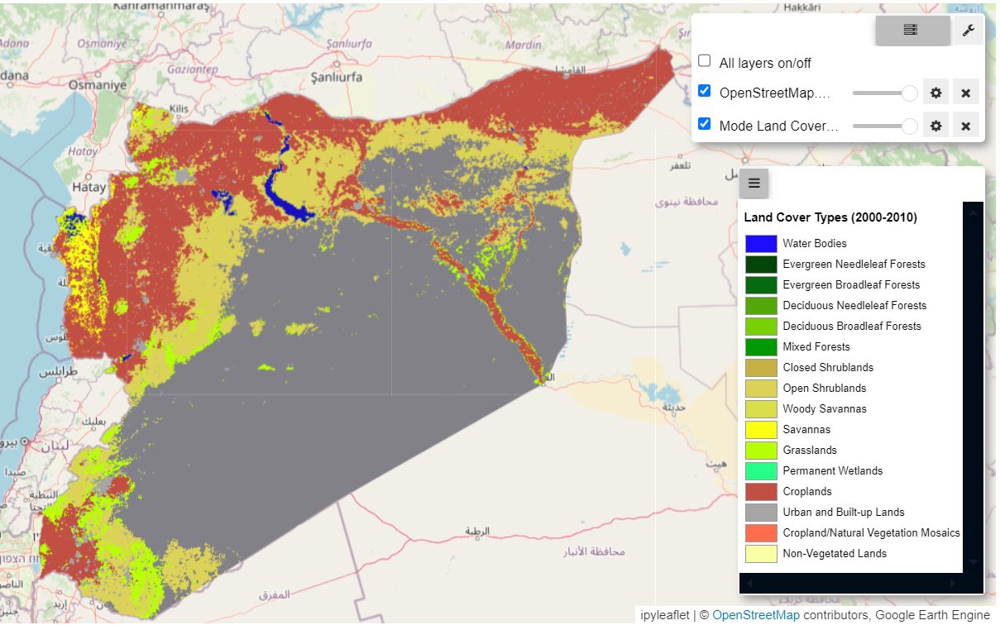
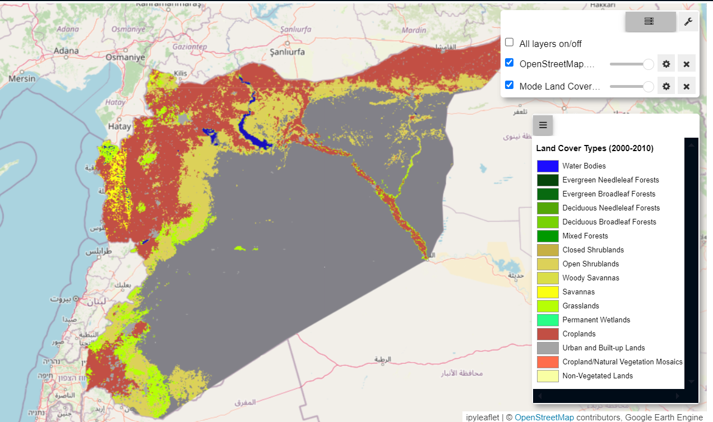
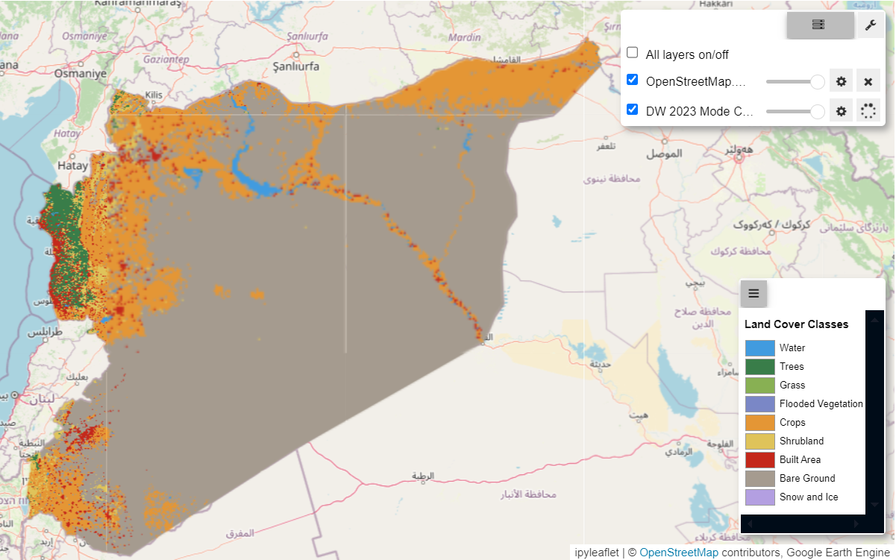
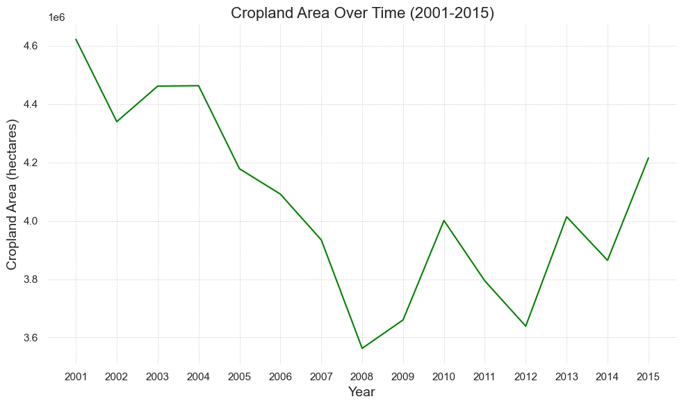
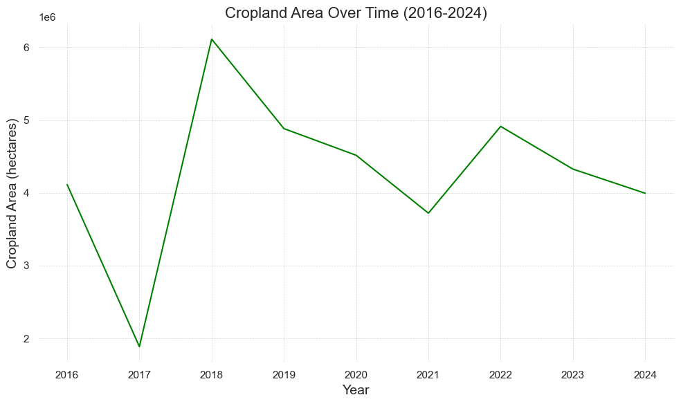
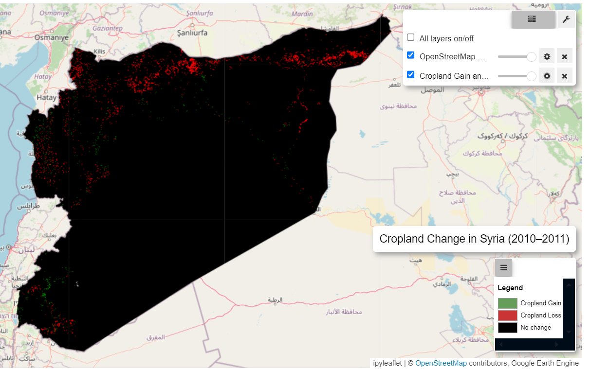
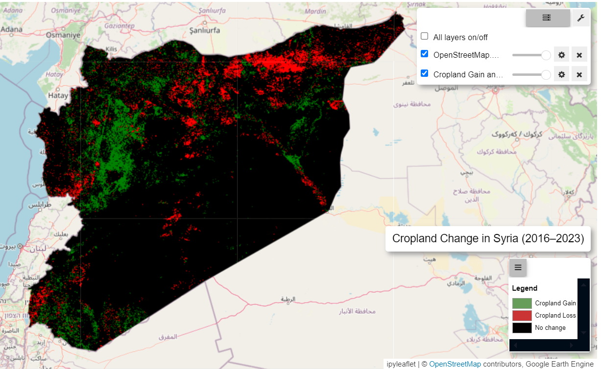
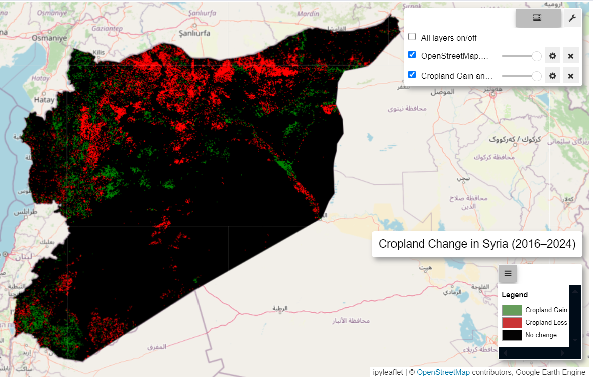

Syria Land Cover Land Use Analytics#
Overview#
This notebook analyzes land cover trends specifically for croplands in Syria over time using spatial imagery datasets and also attempt to assess the pre and post conflict environmental impacts.
Data#
The following datasets are utilized in this analysis for calculating and mapping crop productivity over the past years:
Dynamic World Dataset:
Source: Dynamic World - Google and the World Resources Institute (WRI)
Description:The Dynamic World dataset provides a near real-time, high-resolution (10-meter) global land cover classification. It is derived from Sentinel-2 imagery and utilizes machine learning models to classify land cover into nine distinct classes, including water, trees, grass, crops, built areas, bare ground, shrubs, flooded vegetation, and snow/ice. The dataset offers data with minimal latency, enabling near-immediate analysis and decision-making.
Spatial Resolution: 10 meters.
Temporal Coverage: Data is available since mid-2015, updated continuously as Sentinel-2 imagery becomes available capturing near Real-time.
Use Case: Dynamic World is valuable for monitoring land cover changes, assessing deforestation, urban expansion, agricultural land use changes, and disaster impacts (e.g., flooding). Its high spatial and temporal resolution enables detailed tracking of land cover dynamics for environmental management and planning.
2.MODIS Land Cover Dataset:
Source: NASA’s Moderate Resolution Imaging Spectroradiometer MODIS Land Cover on Terra and Aqua satellites.
Description: The MODIS Land Cover dataset (MCD12Q1) provides annual global land cover classification at 500-meter resolution. It includes several classification schemes, such as the International Geosphere-Biosphere Programme (IGBP), University of Maryland (UMD), and MODIS-derived classifications. The dataset also includes a LC_Type2 band that represents vegetation and land cover types based on the University of Maryland classification scheme [LC_Type2 Class]
Spatial Resolution: 500 meters.
Temporal Coverage: Annual classifications are available from 2001 to the present.
Use Case: The dataset is widely used for global and regional land cover analysis, biodiversity assessments, agricultural monitoring (focusing on cropland classification using LC_Type2), ecosystem studies, and climate change research. The annual updates enable tracking of land cover changes over time, which supports environmental policy planning and implementation.
Administrative Boundaries (HDX):
Source: Humanitarian Data Exchange HDX.
Description: Geographic boundaries used for spatial aggregation and administrative analysis, such as calculating productivity metrics by region (e.g., governorate or district).
Use Case: The administrative boundaries are used to aggregate EVI statistics by region and facilitate reporting at various administrative levels.
ACLED Conflict Data:
Source: ACLED provides real-time data on conflict events worldwide.
Description: Conflict data was sourced from the ACLED database, which provides detailed records of events such as battles, protests, and other violent activities, including attributes like event type, date, and number of fatalities.The dataset was loaded as a CSV and converted to a GeoDataFrame (acled_gdf), with geometries representing the event locations. -Use Case: Used for conflict monitoring, risk assessment, and informing humanitarian policies.
Syria Land Cover#



Cropland Area Yearly Trends#


Cropland Area change Map#
Methodology#
Data Filtering and Preparation: The Dynamic World dataset and (MODIS for 2010-2011 map) is filtered for the study area (Syria) and two time periods (2016 and 2023/2024). Binary mosaics are created for each period to isolate the cropland class (
label == 4). The comparison is made from 2016 since this dataset is available from June 2015.Change Detection: Cropland gain (areas transitioning from non-cropland to cropland) and loss (areas transitioning from cropland to non-cropland) are identified by comparing the 2016 and 2023/2024 cropland layers.
Combined Change Layer: The gain and loss layers are merged into a single raster image, where pixel values represent cropland gain (
1), loss (2), or no change (0).Visualization and Interpretation: The combined change layer is visualized on a map using a color-coded palette (black for no change, green for gain, red for loss), along with a legend and annotations for easy interpretation of cropland dynamics.


